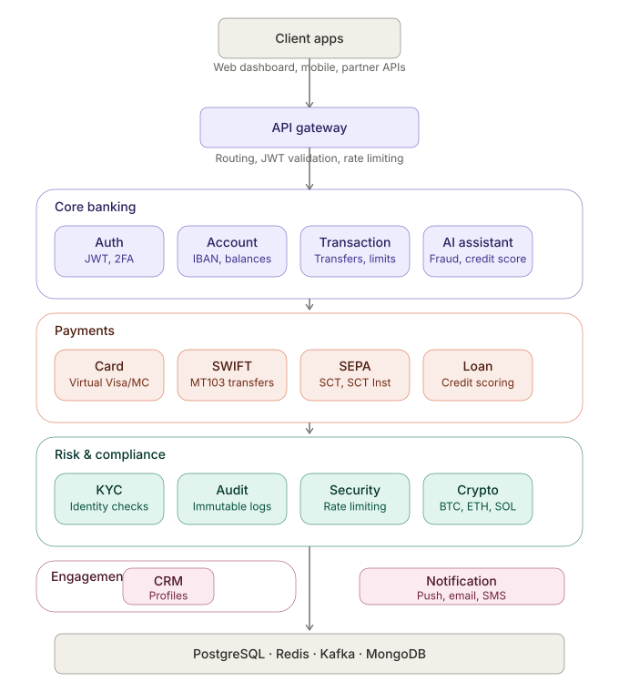

Microservices banking platform — accounts, transfers, fraud scoring, an AI assistant and notifications — deployed locally with Docker, validated on a real Kubernetes cluster, and provisioned for AWS via Terraform. 156 automated tests pass. The flow below isn't a mockup: it's a live transfer between two real accounts.
JWT auth with 2FA, KYC status, IBAN-generating account service, and a transaction engine with daily/monthly limits, balance checks and reversible transfers.
Every transfer is scored on amount thresholds, daily velocity (Redis-backed) and transaction history — flagging suspicious activity before it completes.
Claude-powered banking chatbot plus a credit-scoring and spending-recommendation engine, exposed as its own service.
Push, email and SMS providers with templated messages — Kafka-driven, with graceful simulation mode when no provider key is configured.
Upload de documents (CNI/Passeport), vérification AI automatique, workflow pending → in_review → verified, approbation admin.
Génération de cartes Visa/Mastercard avec algorithme de Luhn, CVV hashé, limites journalières/mensuelles, freeze/unfreeze.
Traçabilité complète de toutes les actions — logs immuables PostgreSQL, recherche multi-critères, export CSV pour régulateurs.

conftest fixtures, mocked Kafka/Redis, JWT-based auth in tests — 78/78 green.
Built & loaded images into a kind cluster, deployed via Kustomize overlay, confirmed pods schedule correctly.
asyncpg driver mismatch, bcrypt 4.x break, cross-service JWT secret mismatch, SQLAlchemy FK metadata resolution — all caught and fixed against a running stack.
Registered two users, opened accounts, ran a real transfer — balances updated correctly, fraud score computed, transaction logged.
IAM admin user, S3 Terraform backend, terraform plan → 75 resources, zero errors.
5 pods running on real EKS nodes connected to RDS PostgreSQL — then cleanly destroyed to avoid costs.
KYC, Audit, Cards, SWIFT (MT103), SEPA (SCT Inst), Security (Rate Limiting), Loans (credit scoring), Crypto Wallet (BTC/ETH/SOL), CRM (customer profiles & support tickets) — all tested end-to-end.
Full test coverage across all 14 microservices — conftest fixtures, mocked Redis/Kafka, JWT auth, real PostgreSQL integration tests.
Debugged a subtle table-creation race condition affecting 7 services in CI (SQLAlchemy metadata.create_all running before raw-SQL table setup) — all 14 services now test, build and push to GHCR automatically on every push.
30 concurrent virtual users against transaction-service's read path — zero failures, p95 latency 85ms (500ms threshold), 1938 requests served at 27.5 req/s.
Card numbers now encrypted at rest with Fernet, transparent to application code via a Python property — caught and reverted a regression where per-service JWT secrets broke cross-service auth.
auth, account, transaction, notification services running on real EKS nodes connected to RDS PostgreSQL with SSL — cleanly destroyed after validation.
Added pip-audit to CI across all 14 services. Found and patched 4 real disclosed CVEs — a Starlette host-header URL confusion bug, a python-dotenv symlink rewrite flaw, a python-jose JWT decompression bomb, and two python-multipart parsing issues — each verified with full test suites before merging.
A 5th CVE (unbounded recursion in pyasn1) turned out to be blocked by python-jose's own version pin. Rather than force a broken build, documented the constraint and assessed actual exposure: low, since the app only uses HS256 symmetric signing, not the vulnerable ASN.1/JWE decode path.
Standing orders feature — create, pause, resume, cancel recurring payments at daily/weekly/monthly intervals. An APScheduler job checks for due orders every 60 seconds and executes them, advancing the next due date and recording a real transaction. 8 new tests, including a direct unit test of the scheduler logic itself.
Upgraded a static 8-currency rate table to live ECB reference rates via the Frankfurter API — 160+ currencies, hourly auto-refresh, transparent source/timestamp in the response, and graceful fallback to static rates if the external API is unreachable.
Added SELECT FOR UPDATE on account reads before every debit — database-level pessimistic locking ensures two simultaneous transfers from the same account can never both succeed if the balance is insufficient.
Replaced direct Kafka publish with transactional outbox — events are written to the DB in the same transaction as the business logic, then published to Kafka every 5 seconds. Eliminates dual-write risk: no event is ever lost even if the service crashes mid-operation.
Every transfer automatically rounds up to the nearest euro and credits the difference to a linked savings goal — verified live: a 23.40€ transfer triggered a 0.60€ round-up credited instantly. Goals support pause/resume/cancel, configurable multiples (1/5/10€), and a progress tracker toward optional targets.